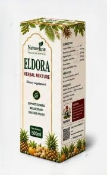
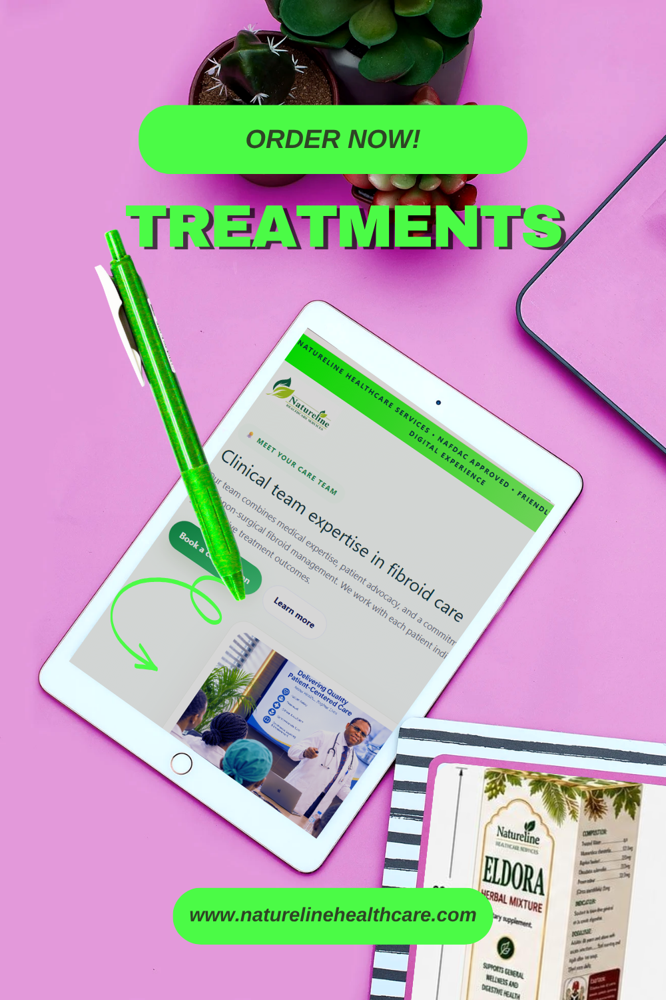
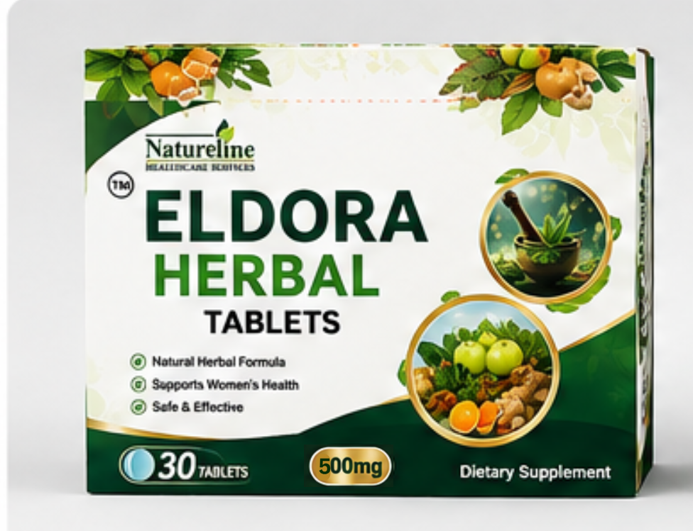
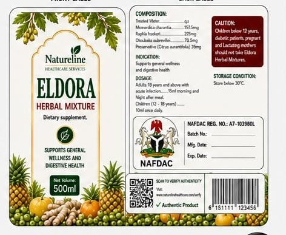
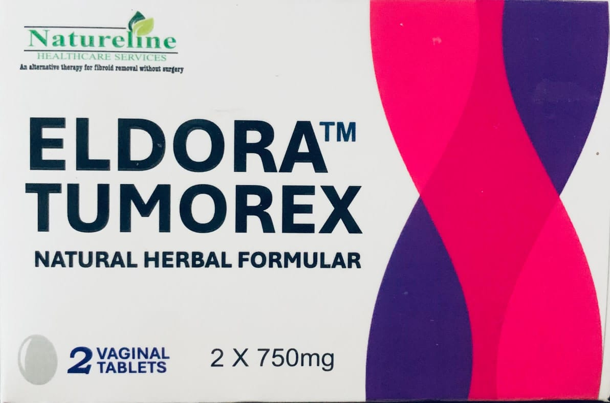

The Natureline non-surgical fibroid treatment pathway
Natureline offers a structured, evidence-based approach to fibroid management without surgery. Our treatment combines botanical formulation, clinical oversight, and patient education to help women achieve symptom relief and improved quality of life.

Eldora Hormexol hormone booster
The fertility syrup is loaded with organic hormone boosting supplements like vitex and others . Made from bee pollen and potent fruits and seeds to hasten conception. The active ingredients have been used for fertility for centuries. Price is ₦18500 for 250 ml.

Enervate TabletsEldora Enervate tablets
This dietary supplement is taken orally to render fibroids inactive by weakening their tissues and softening the abdomen. It has also helped many cancer patients by boosting the immune system and supporting red blood cell production. Pack size: 30 tablets. Price: ₦25,000.

Anti Festering PowderEldora Anti Festering Powder
Indicated to expedite the healing of wounds caused by diabetes and other wounds that defy healing. Developed from decades of research and used to restore hope to many at risk of amputation. Price: ₦45,000 for 100 g.

Herbal TabletEldora Herbal Tablet
Blended from the finest African herbs as a dietary supplement for high cholesterol, high blood sugar, and regulated blood circulation. It comes in 30 tablets per pack and is approved by NAFDAC. Price: ₦28,500.

Herbal MixtureEldora Herbal Mixture
A potent detoxifier indicated for the treatment of different kinds of STDs and STIs. It also supports general wellness and digestive health by removing impurities from the body. Approved by NAFDAC. Price: ₦15,000 for a 500 ml bottle.

Tumorex FormulaEldora Tumorex natural formula
Indicated for the treatment and removal of fibroids, ovarian cysts, pelvic inflammatory disease, and polycystic ovarian syndrome. It also unblocks fallopian tubes, reopens adhesions, and restores uterine status for fertility. Price: ₦35,000 per dose of 2 tablets.
Many women prefer to avoid surgical intervention due to recovery time, surgical risks, or desire to preserve uterine tissue. Natureline's approach offers a clinically supervised alternative with proven safety and efficacy in fibroid reduction.